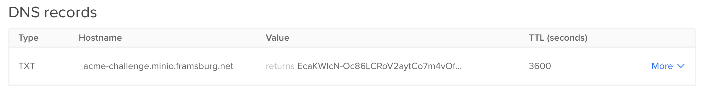

Harware Setup of Raspberry PIs
https://www.blinkstick.com/products/blinkstick-nano
The initial setup is done with Ansible.
PoE HAT
The fan of the PoE HAT tends to occelate between min and max speed. Accoding to an article by Jeff Geerling this can be adjusted.
PSU
https://github.com/dzomaya/NUTandRpi
Setup Minio
TLS: https://docs.ansible.com/ansible/latest/collections/community/crypto/acme_certificate_module.html
Install Minio with installer.
It is recommended to setup MinIO with a correct Domain and Certificate because,
several systems either do not support insecure connections, custom certificates
or disabling verification. The MinIO Documentation has a good guide how to
use certbot to install this.
Certs over certbot
You can use HTTP or DNS challenge. The latter is dicribed on digitalocean
$ certbot certonly --config-dir config --work-dir workdir --logs-dir logs --manual --preferred-challenges dns --debug-challenges -d minio.framsburg.net
During the execution, certbot requires you to add a specific DNS entry to your Domain. This looks similar to:

Certs over ACME Client (Opnsense)
Opnsense has a service plugin for the ACME protocol to create certificates. The tricky part is how to get the certificates from Opnsense to Minio. The plugin allows to create automations to do for example a SFTP copy of the certs to the minio server.
The only small pitfall is that Minio users for the public cert not the pure cert file put the full chain, which is a combination of the cert + ca as described in the MinIO Documentation.
So your Opnsense Config looks something like this:
| Field | Value |
|---|---|
| Name | Upload Minio Certificate |
| Run Command | Upload certificate via SFTP |
| SFTP Host | minio.server |
| SFTP Port | 22 |
| Removte Path | /path-to-minio-home/.minio/certs |
| Naming "key.pem" | private.key |
| Naming "fullchain.pem" | public.crt |
Setup Minio Monitoring
Minio requires two env variables to connect to prometheus metrics:
export MINIO_PROMETHEUS_URL=https://prometheus.framsburg.ch
export MINIO_PROMETHEUS_JOB_ID=minio-job
Additionally you might need to set MINIO_PROMETHEUS_AUTH_TYPE to public as
authentication over jwt is the default.
Setup Minio Bucket for Backup
$ mc admin user add myminio k3s k3sk3sk3s
$ cat > /tmp/etcd-backups-policy.json <<EOF
{
"Version": "2012-10-17",
"Statement": [
{
"Action": [
"s3:PutBucketPolicy",
"s3:GetBucketPolicy",
"s3:DeleteBucketPolicy",
"s3:ListAllMyBuckets",
"s3:ListBucket"
],
"Effect": "Allow",
"Resource": [
"arn:aws:s3:::k3s"
],
"Sid": ""
},
{
"Action": [
"s3:AbortMultipartUpload",
"s3:DeleteObject",
"s3:GetObject",
"s3:ListMultipartUploadParts",
"s3:PutObject"
],
"Effect": "Allow",
"Resource": [
"arn:aws:s3:::k3s/*"
],
"Sid": ""
}
]
}
EOF
$ mc admin policy add myminio etcd-backups-policy /tmp/etcd-backups-policy.json
$ mc admin policy set myminio etcd-backups-policy user=k3s
Define K3S backup target
[Service]
ExecStart={{ k3s_binary_path }}/k3s server \
...
{% if backup_s3_enabled %}
--etcd-s3 \
--etcd-snapshot-schedule-cron='{{ backup_schedule_cron }}' \
--etcd-s3-endpoint='{{ backup_s3_endpoint }}' \
--etcd-s3-endpoint-ca='{{ systemd_dir }}/k3s-server.service.crt' \
--etcd-s3-bucket='{{ backup_s3_bucket }}' \
--etcd-s3-folder='{{ backup_s3_folder }}' \
--etcd-s3-access-key='{{ backup_s3_access_key }}' \
--etcd-s3-secret-key='{{ backup_s3_secret_key }}' \
{% endif %}
Define in ansible vault ansible-vault edit group_vars/all.yaml the four coordinates:
backup_schedule_cron: '0 */6 * * *'
backup_s3_bucket: k3s
backup_s3_folder: etcd-snapshot
backup_s3_endpoint_ca: |
-----BEGIN CERTIFICATE-----
MIIDgTCCAmmgAwIBAgIJAJ85e+K5ngFRMA0GCSqGSIb3DQEBCwUAMGsxCzAJBgNV
(Optional) Rolling Update
The initial ansible script is not very suitable for rolling updates as it assumes it is about to initialize a cluster which requires the order
- First master node which initializes (or restores) the etcd state
- All other master nodes which sync up to the first
- All worker nodes
That is very efficient for setup and restore but would mean some outages if applied on a live cluster. Therefore we need a playbook which goes through every node sequentially (we have no special requirement on performance) and cares about draining nodes correctly.
Ideally we can reuse roles from the cluster setup playbook.
Update K3S Version
Update version in hosts or manifest
Use playbook 07_k3s_update and start with the master nodes individually.
Be aware that Longhorn and other systems need time to recover from the reboots
otherwise they will block a shutdown or might loose data.
Lenovo nic e1000
Some tiny servers might have an issue with their network card specifically with the offloading. In case the network adapter hangs itself up the following command might help:
This should be added as startup command to /etc/network/if-up.d/